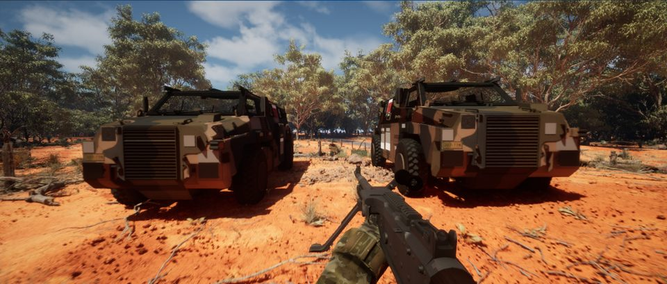

Roadmap
Where it is, and where it goes
Status, the phases and the order of work. Everything counted here is read straight from the project’s own documents.
Development
Where the project actually is
Everything below is read directly from the project’s own roadmap and changelog. Nothing is estimated or rounded for effect, and no completion percentage is shown because none is tracked. Southern Spear is pre‑alpha and is planned for Steam; no release date has been set.
Loading development status…
Route forward
What happens next, in order
The order follows what depends on what, not a calendar. Nothing here has a date, and no release date has been set. It changes when testing shows it should.

Soldiers and movement
One deliberate, readable soldier on both sides, and first‑person movement that looks like a person running. The sprint is a rough stand‑in today and is the first thing being rebuilt.
Weapon handling and textures
Hold, reload and aim for every weapon, checked against the same conditions each time, then proper surface work on the guns. The support guns come after the rifles.
Effects and gunfire
Muzzle flash, tracers, impacts and dust, so firing reads clearly, along with the sound that goes with it.
Recoil and zeroing from real data
Bullet drop and zeroing are built but switched off. They stay off until the design is settled, because they change how every fight plays.
Performance, then maps
Frame time on a packaged build gets measured before more is added to the maps. Then the maps get their polish and their routes checked.
Multiplayer you can trust
The server checking hits rather than trusting the player, and a dedicated server build. Neither is done, and no public multiplayer claim is made until they are.
Roadmap
Seven phases, one proven at a time
The project proves the expensive‑to‑get‑wrong parts first: networking, team presentation, authority and persistence. Art is deliberately deferred until the systems hold.
Loading roadmap…
Read the full roadmap document
Changelog
The latest session
Every working session is recorded with what was completed, how it was tested, the risks and the next action — evidence, not narrative. The newest entry is below; the full changelog carries every session, searchable and filtered.
Loading latest update…
Read every session, with search and category filters, on the changelog page. The log is also published as plain Markdown at data/CHANGELOG.md.